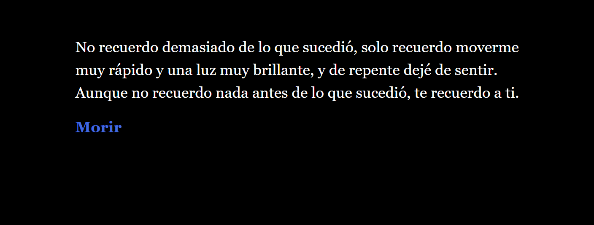

Revive or Die... Again

Novela grafica en la que has muerto y tu alma es despertada en la carismatica y misteriosa "Universidad de Almas" en donde tendrás que aprender sobre lo que significa vivir, morir y resucitar.

Soy una persona emocionada por aprender y dispuesta a trabajar lo necesario para lograr mis objetivos. Me adapto bien a los cambios y puedo trabajar de una forma rápida y eficiente. Mis objetivos actuales es empezar a crecer de forma profesional al mismo tiempo que educativa y personalmente, busco aprender ya sea como becario o medio tiempo.
Soy el hijo menor de una familia de 5, siempre me he intentado superar a mi mismo desde temprana edad formando parte de una escuela de karate donde llegue a ser cinta negra y ganar torneos a nivel panamericano, más adelante en mi vida he trabajado dentro del sector atención al cliente y me he desarrollado formando parte de equipos siendo actualmente parte de Starbucks. Más adelante descubrí una nueva pasión en la programación y desde entonces me he desarrollado en diferentes habilidades como C#, HTML, CSS. Además de motores de videojuegos como Unity y Unreal.
Novela grafica en la que has muerto y tu alma es despertada en la carismatica y misteriosa "Universidad de Almas" en donde tendrás que aprender sobre lo que significa vivir, morir y resucitar.
Juego de cartas digital en donde los jugadores se enfrentarán entre ellos para ser el ganador. Tira el dado, toma una carta y conoce tu destino.
Juego multijugador local desarrollado en Unity 3D perteneciente al género scape run donde los jugadores recorren una pista mientras que otro activa trampaas durante el camino para evitar que lleguen a la meta.